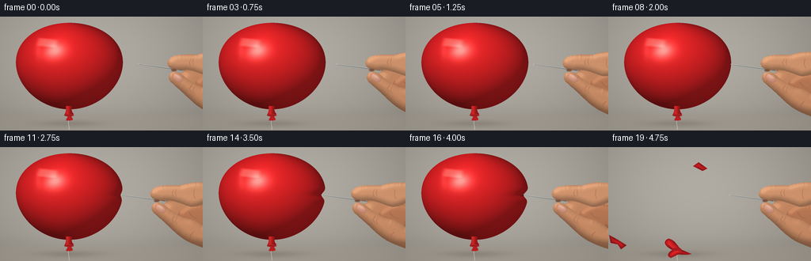
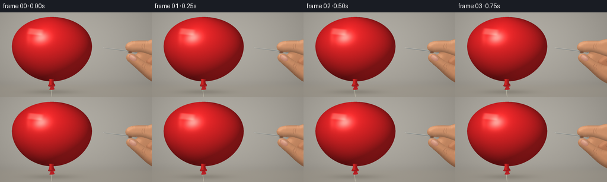

CODING AGENTS AS PIXEL WORLD MODELS
traex/GPT-6.1-Sol · phygen_021
点击播放 · 原生 RGB 像素
逐轮保存的候选
回放视频、检查图与代码变化。
每份候选均可单独播放。实际图片检查记录在下方工具轨迹中。
候选 01播放与检查图
点击播放 · 原生 RGB 像素


展开代码变化
--- 上一保存版本
+++ 本次保存版本
@@ -0,0 +1,280 @@
+"""Procedural, supersampled close-up of a needle puncturing an inflated balloon."""
+from pathlib import Path
+import math
+import numpy as np
+from PIL import Image, ImageDraw, ImageFilter
+from scipy.ndimage import distance_transform_edt, gaussian_filter
+import artifact_io
+
+ROOT = Path(__file__).resolve().parent
+W,H,S=256,144,4
+WW,HH=W*S,H*S
+Y,X=np.mgrid[0:HH,0:WW].astype(np.float32)/S
+rng=np.random.default_rng(210)
+texture=rng.normal(0,1,(HH,WW)).astype(np.float32)
+
+def curve_points(commands,dx=0,dy=0):
+ out=[]; p=None
+ for c in commands:
+ if c[0]=='M':
+ p=np.array(c[1:],float); out.append(p)
+ elif c[0]=='L':
+ p=np.array(c[1:],float);out.append(p)
+ elif c[0]=='C':
+ a=p.copy(); b=np.array(c[1:3]);d=np.array(c[3:5]);e=np.array(c[5:7])
+ for t in np.linspace(0,1,22)[1:]:
+ out.append((1-t)**3*a+3*(1-t)**2*t*b+3*(1-t)*t*t*d+t**3*e)
+ p=e
+ return [((p[0]+dx)*S,(p[1]+dy)*S) for p in out]
+
+def path_mask(commands,dx=0,dy=0):
+ a=Image.new('L',(WW,HH));ImageDraw.Draw(a).polygon(curve_points(commands,dx,dy),fill=255)
+ return np.asarray(a,dtype=np.float32)/255
+
+def comp(im,col,alpha):
+ aa=np.asarray(alpha,dtype=np.float32)
+ if aa.ndim==2:aa=aa[...,None]
+ im[:]=im*(1-aa)+np.asarray(col,dtype=np.float32)*aa
+
+def ellipse(im,xy,color,blur=0):
+ a=Image.new('L',(WW,HH));ImageDraw.Draw(a).ellipse(tuple(v*S for v in xy),fill=255)
+ if blur:a=a.filter(ImageFilter.GaussianBlur(blur*S))
+ comp(im,color,np.asarray(a)/255)
+
+def stroke(im,points,color,width=1,blur=0):
+ m=Image.new('L',(WW,HH));d=ImageDraw.Draw(m)
+ d.line([(x*S,y*S) for x,y in points],fill=255,width=max(1,int(width*S)),joint='curve')
+ if blur:m=m.filter(ImageFilter.GaussianBlur(blur*S))
+ comp(im,color,np.asarray(m)/255)
+
+def background():
+ # Warm, very softly focused studio backdrop; no text or extra objects.
+ light=np.exp(-((X-109)/160)**2-((Y-48)/102)**2)
+ v=.95-.10*((X-110)/230)**2-.08*((Y-50)/160)**2
+ c=np.array([163,158,149],np.float32)[None,None,:]*v[...,None]+light[...,None]*np.array([21,22,22])
+ wall=np.exp(-((Y-121)/7)**2)
+ c-=wall[...,None]*3
+ table=1/(1+np.exp(-(Y-124)/1.6))
+ comp(c,np.array([156,149,136])+np.clip((Y-123)*.18,0,5)[...,None],table*.50)
+ # A softly falling shadow of the floating balloon below the knot.
+ sh=np.exp(-((X-88)/40)**2-((Y-135)/4.2)**2)
+ c-=sh[...,None]*19
+ c+=texture[...,None]*.28
+ return c
+
+BASE=[('M',288,48),('C',270,43,254,43,242,48),('C',228,48,217,47,210,51),
+ ('C',204,54,202,59,206,63),('C',209,67,217,68,224,68),
+ ('C',223,72,216,73,212,74),('C',205,76,208,84,216,90),
+ ('C',229,101,238,113,253,120),('C',264,125,277,130,291,132),('L',294,55)]
+INDEX=[('M',282,46),('C',268,43,254,44,242,48),('C',231,49,218,47,211,50),
+ ('C',206,52,202,57,204,61),('C',205,66,214,68,223,67),
+ ('C',235,67,244,72,254,75),('C',265,76,275,69,284,64)]
+THUMB=[('M',280,123),('C',261,124,246,116,232,102),('C',223,94,214,88,208,83),
+ ('C',204,79,204,74,208,71),('C',214,68,220,71,225,76),
+ ('C',237,85,246,90,255,91),('C',267,95,278,104,286,114)]
+FOLDED=[('M',277,74),('C',263,69,251,71,242,79),('C',237,83,237,89,242,94),
+ ('C',248,100,260,108,273,105),('C',284,104,290,91,284,82)]
+
+# Common skin shading: rounded surfaces, gentle microtexture and soft edge shading.
+def skin(im,path,dx,dy,radius=9,base=(191,131,94),highlight=(231,180,138)):
+ mask=path_mask(path,dx,dy)
+ dist=distance_transform_edt(mask)/S
+ # Rounded volume reconstructed from distance to the projected silhouette.
+ dd=gaussian_filter(dist,.48*S)
+ a=np.clip(dd/radius,0,1)
+ z=radius*np.sqrt(np.clip(1-(1-a)**2,0,1))
+ gy,gx=np.gradient(z,1/S,1/S)
+ nx=-gx;ny=-gy;nz=np.ones_like(nx)
+ norm=np.sqrt(nx*nx+ny*ny+1)
+ lam=np.clip((nx*(-.38)+ny*(-.65)+nz*.73)/norm,0,1)
+ val=.69+.30*lam+.07*a
+ co=np.array(base)[None,None,:]*val[...,None]
+ top=np.exp(-((Y-(64+dy))/29)**2)
+ co+=top[...,None]*np.array([11,9,7])
+ hi=np.clip((lam-.72)/.28,0,1)**5
+ co+=hi[...,None]*np.array([18,17,15])
+ co+=texture[...,None]*.75
+ # Subtle mottled skin tone, rather than a flat plastic surface.
+ co+=np.sin(X*.85+Y*.67)[...,None]*.38
+ comp(im,co,mask)
+
+
+def nail(im,dx,dy):
+ # Thumbnail, obliquely viewed at the pinching tip.
+ cx,cy=215.8+dx,77.2+dy
+ u=(X-cx)*.83+(Y-cy)*.55
+ v=-(X-cx)*.55+(Y-cy)*.83
+ r=(u/7.3)**2+(v/4.45)**2
+ edge=np.clip((1.04-r)*12,0,1)
+ col=np.zeros((HH,WW,3),np.float32)
+ lum=np.exp(-((u+1.5)/6)**2-((v+1.4)/3.4)**2)
+ col[:]=[192,133,113]
+ col+=lum[...,None]*np.array([36,37,33])
+ col+=np.exp(-((u+4.4)/1.25)**2)[...,None]*np.array([10,8,5])
+ comp(im,col,edge)
+ rim=np.exp(-((r-.96)/.07)**2)*.33
+ comp(im,[132,83,65],rim)
+ gl=np.exp(-((u+.5)/4.8)**2-((v+1.9)/.65)**2)*.42
+ comp(im,[246,212,181],gl*edge)
+
+
+def hand_back(im,dx,dy):
+ skin(im,BASE,dx+8,dy,15)
+ skin(im,FOLDED,dx+8,dy,9,(181,117,82))
+ # Folded middle finger, faint joint creases at the palm.
+ for pts in [[(252,82),(257,88),(263,90)],[(252,96),(257,100),(263,101)],[(271,94),(272,103),(270,112)]]:
+ stroke(im,[(x+dx+8,y+dy) for x,y in pts],[146,94,71],.65,.34)
+ # Cropped dark slate sleeve at the lower right.
+ cuff=[('M',276,114),('C',281,112,286,116,292,120),('L',302,152),('L',276,153),('C',275,138,274,125,276,114)]
+ mask=path_mask(cuff,dx+8,dy)
+ fabric=np.zeros((HH,WW,3),float);fabric[:]=[44,52,61]
+ fabric+=(np.sin(X*4)+np.sin(Y*4))[...,None]*1.7
+ comp(im,fabric,mask)
+
+
+def hand_front(im,dx,dy):
+ skin(im,INDEX,dx+8,dy,8.8,(203,143,105))
+ # Shading on the fleshy pinch pad and the knuckle.
+ for p in [[(233,53),(231,57),(232,62)],[(236,53),(235,57),(236,61)],[(259,53),(258,60),(260,65)]]:
+ stroke(im,[(x+dx+8,y+dy) for x,y in p],[161,109,80],.55,.30)
+ skin(im,THUMB,dx+8,dy,9.5,(203,141,102))
+ nail(im,dx+8,dy)
+ for pts in [[(234,87),(231,91),(233,95)],[(237,89),(235,93),(237,97)],[(258,107),(254,111),(254,115)]]:
+ stroke(im,[(x+dx+8,y+dy) for x,y in pts],[156,101,75],.58,.27)
+ # Warm contact shadow immediately around the needle between the fingertips.
+ ellipse(im,(216+dx,66+dy,223+dx,69+dy),[122,81,58],.45)
+
+
+def balloon(im,indent=0,contact_y=60,fade=1):
+ cy=62.4;cx=87.5;ry=54.7
+ q=(Y-cy)/ry
+ radial=67.3*np.sqrt(np.clip(1-q*q,0,1))*(1-.085*q)
+ notch=indent*np.exp(-((Y-contact_y)/5.0)**2)
+ radius=radial-np.where(X>cx,notch,0)
+ xx=(X-cx)/np.maximum(radius,.1)
+ inside=(np.abs(q)<1)&(np.abs(xx)<=1)
+ z=np.sqrt(np.clip(1-xx*xx,0,1))*np.sqrt(np.clip(1-q*q,0,1))
+ nx=xx*.88
+ ny=q*.94
+ # Local normals around the pressure dimple draw the membrane inward.
+ ny+=np.where(X>cx, -notch*(Y-contact_y)/14*np.clip(xx,0,1)**8,0)
+ nz=z
+ norm=np.sqrt(nx*nx+ny*ny+nz*nz)+1e-8
+ nx/=norm;ny/=norm;nz/=norm
+ diffuse=np.clip(-.43*nx-.61*ny+.69*nz,0,1)
+ back=np.clip(.70*nx+.15*ny+.65*nz,0,1)
+ value=.37+.58*diffuse+.15*back
+ col=np.array([225,33,37])[None,None,:]*value[...,None]
+ col+=np.array([12,4,3])*nz[...,None]
+ # A broad photographic reflection and a smaller bright highlight.
+ spec=np.clip(-.25*nx-.34*ny+.907*nz,0,1)**65
+ broad=np.clip(-.30*nx-.40*ny+.866*nz,0,1)**12
+ col+=broad[...,None]*np.array([25,12,9])
+ col+=spec[...,None]*np.array([108,114,106])
+ # Soft rectangular studio window reflected in the stretched latex.
+ ux=(X-60)+.22*(Y-32)
+ uy=(Y-33)-.10*(X-60)
+ box=np.exp(-(ux/12.4)**6-(uy/5.2)**6)*.60
+ col+=box[...,None]*np.array([96,96,85])
+ small=np.exp(-((X-48)/3.7)**2-((Y-42)/10.5)**2)*.20
+ col+=small[...,None]*np.array([105,96,84])
+ # Red transmission and grazing reflections at the thin outer edge.
+ edge=np.clip(1-nz,0,1)**9
+ col+=edge[...,None]*np.array([15,3,2])
+ col+=texture[...,None]*.48
+ comp(im,np.clip(col,0,255),inside.astype(float)*fade)
+ # Neck and tied nozzle attached to the body, same latex material.
+ neck=[('M',83,113),('C',84,118,83,121,81.5,124),('C',84,126,91,126,93,123),('C',90,120,90,117,91,113)]
+ m=path_mask(neck)
+ t=np.exp(-((X-85)/2.7)**2)
+ comp(im,np.array([145,20,24])+t[...,None]*np.array([65,19,13]),m*fade)
+ ellipse(im,(81,123,93,126),[157,26,29])
+ stroke(im,[(82,124),(87,123),(92,124)],[220,61,56],.7)
+ tail=[('M',86,125),('L',83,131),('C',87,132,92,131,92,130),('L',90,126)]
+ comp(im,[188,30,35],path_mask(tail))
+
+
+def needle(im,tip,y=60,buried=0):
+ # Tapered solid metal needle. Distinct glint on the upper bevel.
+ endx=tip+58;endy=y+7.5
+ tx=tip+buried;ty=y+buried*7.5/58
+ d=np.array([endx-tx,endy-ty]);n=np.array([-d[1],d[0]]);n/=np.linalg.norm(n)
+ p=[(tx,ty),(endx+n[0]*.6,endy+n[1]*.6),(endx-n[0]*.6,endy-n[1]*.6)]
+ m=Image.new('L',(WW,HH));ImageDraw.Draw(m).polygon([(x*S,y*S) for x,y in p],fill=255)
+ comp(im,[122,133,138],np.asarray(m)/255)
+ stroke(im,[(tx+.7,ty-.12),(endx,endy-.34)],[238,240,231],.42)
+ stroke(im,[(tx+3,ty+.45),(endx,endy+.57)],[66,78,83],.23)
+ # The small sewing-needle eye is mostly hidden in the pinch.
+ stroke(im,[(endx-3.2,endy-.12),(endx-.8,endy+.18)],[55,64,68],.44)
+
+
+def latex_piece(im,path,dx=0,dy=0):
+ m=path_mask(path,dx,dy)
+ dist=distance_transform_edt(m)/S
+ co=np.array([136,18,24])+np.minimum(dist,4)[...,None]*np.array([21,4,3])
+ co+=np.sin(X*.31+Y*.24)[...,None]*np.array([12,2,2])
+ comp(im,np.clip(co,0,255),m)
+
+
+def popped(im,k):
+ # At this temporal sampling the rubber has already recoiled into small,
+ # irregular fragments; the air-filled volume is gone, not slowly deflated.
+ if k==0:
+ p=[('M',33,34),('C',28,58,30,89,53,100),('C',63,105,63,95,62,92),('L',53,86),('L',55,77),('C',38,68,41,58,41,52),('L',35,56),('C',31,45,39,34,33,34)]
+ latex_piece(im,p)
+ p=[('M',73,108),('C',77,96,94,92,113,104),('L',107,110),('L',98,105),('C',93,111,97,117,91,125),('L',82,126),('C',85,116,72,118,73,108)]
+ latex_piece(im,p)
+ p=[('M',106,27),('L',116,20),('L',127,28),('L',121,36),('L',117,30),('L',108,34)]
+ latex_piece(im,p)
+ p=[('M',142,68),('L',148,75),('L',142,86),('L',138,84),('L',142,77),('L',138,73)]
+ latex_piece(im,p)
+ else:
+ p=[('M',81,127),('C',71,122,69,117,75,113),('C',82,112,88,122,91,126),('L',105,132),('C',99,134,89,132,87,133),('L',79,137),('C',73,135,76,130,81,127)]
+ latex_piece(im,p,0,(k-1)*3)
+ stroke(im,[(76,119+(k-1)*3),(83,125+(k-1)*3),(88,129+(k-1)*3)],[227,58,56],.9)
+ p=[('M',13,87),('L',24,93),('L',35,100),('L',28,105),('L',24,99),('L',15,97)]
+ latex_piece(im,p,-(k-1)*12,(k-1)*24)
+ p=[('M',103,10),('L',110,5),('L',121,13),('L',115,16),('L',107,12)]
+ latex_piece(im,p,4*(k-1),14*(k-1))
+ ellipse(im,(81,123+2*k,92,127+2*k),[172,27,33])
+
+
+def render(i):
+ im=background()
+ # The very thin cotton tether keeps the inflated balloon steady.
+ stroke(im,[(87,126),(86,133),(87.3,143)],[224,217,196],.7,.12)
+ if i<=8:
+ t=i/8
+ tip=173-19*(t*t*(3-2*t))
+ indent=0;buried=0
+ elif i<=15:
+ t=(i-8)/7
+ tip=154-6*t
+ indent=6*t;buried=0
+ elif i==16:
+ tip=146.3;indent=6.1;buried=1.5
+ else:
+ tip=146.3+(i-16)*1.8
+ indent=0;buried=0
+ dx=tip-173;dy=(173-tip)*.018
+ hand_back(im,dx,dy)
+ if i<17:
+ balloon(im,indent,60+dy)
+ if i==16:
+ # Minute puncture immediately below the bevel, before rupture.
+ ellipse(im,(147.1,59.45+dy,149.5,61.3+dy),[71,17,20],.10)
+ stroke(im,[(147.7,59.6+dy),(149.2,58.4+dy)],[222,64,57],.35)
+ else:popped(im,i-17)
+ needle(im,tip,60+dy,buried)
+ hand_front(im,dx,dy)
+ # Fine photographic grain and a subtle optical vignette.
+ vign=np.clip(1-.055*((X-127)/170)**2-.045*((Y-65)/120)**2,.85,1)
+ im*=vign[...,None]
+ im+=texture[...,None]*.20
+ hi=Image.fromarray(np.clip(im,0,255).astype(np.uint8),'RGB')
+ return np.asarray(hi.resize((W,H),Image.Resampling.LANCZOS))
+
+if __name__=='__main__':
+ frames=np.stack([render(i) for i in range(20)])
+ artifact_io.save(frames,ROOT)
+ print('Saved',frames.shape,frames.dtype,'to',ROOT)
可观测工具轨迹
实际执行的命令与返回图片。
命令 1exit 0
/bin/bash -lc 'ls -la && cat prompt.txt && cat GENERATION_RULES.md && cat task_spec.json'
命令 2exit 0
/bin/bash -lc "cat artifact_io.py && cat player_template.html && python - <<'PY' import importlib.util for x in ['numpy','PIL','scipy']: print(x, bool(importlib.util.find_spec(x))) PY"
命令 3exit 0
/bin/bash -lc "cat > generate.py <<'PY'
\"\"\"Procedural, supersampled close-up of a needle puncturing an inflated balloon.\"\"\"
from pathlib import Path
import math
import numpy as np
from PIL import Image, ImageDraw, ImageFilter
from scipy.ndimage import distance_transform_edt, gaussian_filter
import artifact_io
ROOT = Path(__file__).resolve().parent
W,H,S=256,144,4
WW,HH=W*S,H*S
Y,X=np.mgrid[0:HH,0:WW].astype(np.float32)/S
rng=np.random.default_rng(210)
texture=rng.normal(0,1,(HH,WW)).astype(np.float32)
def curve_points(commands,dx=0,dy=0):
out=[]; p=None
for c in commands:
if c[0]=='M':
p=np.array(c[1:],float); out.append(p)
elif c[0]=='L':
p=np.array(c[1:],float);out.append(p)
elif c[0]=='C':
a=p.copy(); b=np.array(c[1:3]);d=np.array(c[3:5]);e=np.array(c[5:7])
for t in np.linspace(0,1,22)[1:]:
out.append((1-t)**3*a+3*(1-t)**2*t*b+3*(1-t)*t*t*d+t**3*e)
p=e
return [((p[0]+dx)*S,(p[1]+dy)*S) for p in out]
def path_mask(commands,dx=0,dy=0):
a=Image.new('L',(WW,HH));ImageDraw.Draw(a).polygon(curve_points(commands,dx,dy),fill=255)
return np.asarray(a,dtype=np.float32)/255
def comp(im,col,alpha):
aa=np.asarray(alpha,dtype=np.float32)
if aa.ndim==2:aa=aa[...,None]
im[:]=im*(1-aa)+np.asarray(col,dtype=np.float32)*aa
def ellipse(im,xy,color,blur=0):
a=Image.new('L',(WW,HH));ImageDraw.Draw(a).ellipse(tuple(v*S for v in xy),fill=255)
if blur:a=a.filter(ImageFilter.GaussianBlur(blur*S))
comp(im,color,np.asarray(a)/255)
def stroke(im,points,color,width=1,blur=0):
m=Image.new('L',(WW,HH));d=ImageDraw.Draw(m)
d.line([(x*S,y*S) for x,y in points],fill=255,width=max(1,int(width*S)),joint='curve')
if blur:m=m.filter(ImageFilter.GaussianBlur(blur*S))
comp(im,color,np.asarray(m)/255)
def background():
# Warm, very softly focused studio backdrop; no text or extra objects.
light=np.exp(-((X-109)/160)**2-((Y-48)/102)**2)
v=.95-.10*((X-110)/230)**2-.08*((Y-50)/160)**2
c=np.array([163,158,149],np.float32)[None,None,:]*v[...,None]+light[...,None]*np.array([21,22,22])
wall=np.exp(-((Y-121)/7)**2)
c-=wall[...,None]*3
table=1/(1+np.exp(-(Y-124)/1.6))
comp(c,np.array([156,149,136])+np.clip((Y-123)*.18,0,5)[...,None],table*.50)
# A softly falling shadow of the floating balloon below the knot.
sh=np.exp(-((X-88)/40)**2-((Y-135)/4.2)**2)
c-=sh[...,None]*19
c+=texture[...,None]*.28
return c
BASE=[('M',288,48),('C',270,43,254,43,242,48),('C',228,48,217,47,210,51),
('C',204,54,202,59,206,63),('C',209,67,217,68,224,68),
('C',223,72,216,73,212,74),('C',205,76,208,84,216,90),
('C',229,101,238,113,253,120),('C',264,125,277,130,291,132),('L',294,55)]
INDEX=[('M',282,46),('C',268,43,254,44,242,48),('C',231,49,218,47,211,50),
('C',206,52,202,57,204,61),('C',205,66,214,68,223,67),
('C',235,67,244,72,254,75),('C',265,76,275,69,284,64)]
THUMB=[('M',280,123),('C',261,124,246,116,232,102),('C',223,94,214,88,208,83),
('C',204,79,204,74,208,71),('C',214,68,220,71,225,76),
('C',237,85,246,90,255,91),('C',267,95,278,104,286,114)]
FOLDED=[('M',277,74),('C',263,69,251,71,242,79),('C',237,83,237,89,242,94),
('C',248,100,260,108,273,105),('C',284,104,290,91,284,82)]
# Common skin shading: rounded surfaces, gentle microtexture and soft edge shading.
def skin(im,path,dx,dy,radius=9,base=(191,131,94),highlight=(231,180,138)):
mask=path_mask(path,dx,dy)
dist=distance_transform_edt(mask)/S
# Rounded volume reconstructed from distance to the projected silhouette.
dd=gaussian_filter(dist,.48*S)
a=np.clip(dd/radius,0,1)
z=radius*np.sqrt(np.clip(1-(1-a)**2,0,1))
gy,gx=np.gradient(z,1/S,1/S)
nx=-gx;ny=-gy;nz=np.ones_like(nx)
norm=np.sqrt(nx*nx+ny*ny+1)
lam=np.clip((nx*(-.38)+ny*(-.65)+nz*.73)/norm,0,1)
val=.69+.30*lam+.07*a
co=np.array(base)[None,None,:]*val[...,None]
top=np.exp(-((Y-(64+dy))/29)**2)
co+=top[...,None]*np.array([11,9,7])
hi=np.clip((lam-.72)/.28,0,1)**5
co+=hi[...,None]*np.array([18,17,15])
co+=texture[...,None]*.75
# Subtle mottled skin tone, rather than a flat plastic surface.
co+=np.sin(X*.85+Y*.67)[...,None]*.38
comp(im,co,mask)
def nail(im,dx,dy):
# Thumbnail, obliquely viewed at the pinching tip.
cx,cy=215.8+dx,77.2+dy
u=(X-cx)*.83+(Y-cy)*.55
v=-(X-cx)*.55+(Y-cy)*.83
r=(u/7.3)**2+(v/4.45)**2
edge=np.clip((1.04-r)*12,0,1)
col=np.zeros((HH,WW,3),np.float32)
lum=np.exp(-((u+1.5)/6)**2-((v+1.4)/3.4)**2)
col[:]=[192,133,113]
col+=lum[...,None]*np.array([36,37,33])
col+=np.exp(-((u+4.4)/1.25)**2)[...,None]*np.array([10,8,5])
comp(im,col,edge)
rim=np.exp(-((r-.96)/.07)**2)*.33
comp(im,[132,83,65],rim)
gl=np.exp(-((u+.5)/4.8)**2-((v+1.9)/.65)**2)*.42
comp(im,[246,212,181],gl*edge)
def hand_back(im,dx,dy):
skin(im,BASE,dx+8,dy,15)
skin(im,FOLDED,dx+8,dy,9,(181,117,82))
# Folded middle finger, faint joint creases at the palm.
for pts in [[(252,82),(257,88),(263,90)],[(252,96),(257,100),(263,101)],[(271,94),(272,103),(270,112)]]:
stroke(im,[(x+dx+8,y+dy) for x,y in pts],[146,94,71],.65,.34)
# Cropped dark slate sleeve at the lower right.
cuff=[('M',276,114),('C',281,112,286,116,292,120),('L',302,152),('L',276,153),('C',275,138,274,125,276,114)]
mask=path_mask(cuff,dx+8,dy)
fabric=np.zeros((HH,WW,3),float);fabric[:]=[44,52,61]
fabric+=(np.sin(X*4)+np.sin(Y*4))[...,None]*1.7
comp(im,fabric,mask)
def hand_front(im,dx,dy):
skin(im,INDEX,dx+8,dy,8.8,(203,143,105))
# Shading on the fleshy pinch pad and the knuckle.
for p in [[(233,53),(231,57),(232,62)],[(236,53),(235,57),(236,61)],[(259,53),(258,60),(260,65)]]:
stroke(im,[(x+dx+8,y+dy) for x,y in p],[161,109,80],.55,.30)
skin(im,THUMB,dx+8,dy,9.5,(203,141,102))
nail(im,dx+8,dy)
for pts in [[(234,87),(231,91),(233,95)],[(237,89),(235,93),(237,97)],[(258,107),(254,111),(254,115)]]:
stroke(im,[(x+dx+8,y+dy) for x,y in pts],[156,101,75],.58,.27)
# Warm contact shadow immediately around the needle between the fingertips.
ellipse(im,(216+dx,66+dy,223+dx,69+dy),[122,81,58],.45)
def balloon(im,indent=0,contact_y=60,fade=1):
cy=62.4;cx=87.5;ry=54.7
q=(Y-cy)/ry
radial=67.3*np.sqrt(np.clip(1-q*q,0,1))*(1-.085*q)
notch=indent*np.exp(-((Y-contact_y)/5.0)**2)
radius=radial-np.where(X>cx,notch,0)
xx=(X-cx)/np.maximum(radius,.1)
inside=(np.abs(q)<1)&(np.abs(xx)<=1)
z=np.sqrt(np.clip(1-xx*xx,0,1))*np.sqrt(np.clip(1-q*q,0,1))
nx=xx*.88
ny=q*.94
# Local normals around the pressure dimple draw the membrane inward.
ny+=np.where(X>cx, -notch*(Y-contact_y)/14*np.clip(xx,0,1)**8,0)
nz=z
norm=np.sqrt(nx*nx+ny*ny+nz*nz)+1e-8
nx/=norm;ny/=norm;nz/=norm
diffuse=np.clip(-.43*nx-.61*ny+.69*nz,0,1)
back=np.clip(.70*nx+.15*ny+.65*nz,0,1)
value=.37+.58*diffuse+.15*back
col=np.array([225,33,37])[None,None,:]*value[...,None]
col+=np.array([12,4,3])*nz[...,None]
# A broad photographic reflection and a smaller bright highlight.
spec=np.clip(-.25*nx-.34*ny+.907*nz,0,1)**65
broad=np.clip(-.30*nx-.40*ny+.866*nz,0,1)**12
col+=broad[...,None]*np.array([25,12,9])
col+=spec[...,None]*np.array([108,114,106])
# Soft rectangular studio window reflected in the stretched latex.
ux=(X-60)+.22*(Y-32)
uy=(Y-33)-.10*(X-60)
box=np.exp(-(ux/12.4)**6-(uy/5.2)**6)*.60
col+=box[...,None]*np.array([96,96,85])
small=np.exp(-((X-48)/3.7)**2-((Y-42)/10.5)**2)*.20
col+=small[...,None]*np.array([105,96,84])
# Red transmission and grazing reflections at the thin outer edge.
edge=np.clip(1-nz,0,1)**9
col+=edge[...,None]*np.array([15,3,2])
col+=texture[...,None]*.48
comp(im,np.clip(col,0,255),inside.astype(float)*fade)
# Neck and tied nozzle attached to the body, same latex material.
neck=[('M',83,113),('C',84,118,83,121,81.5,124),('C',84,126,91,126,93,123),('C',90,120,90,117,91,113)]
m=path_mask(neck)
t=np.exp(-((X-85)/2.7)**2)
comp(im,np.array([145,20,24])+t[...,None]*np.array([65,19,13]),m*fade)
ellipse(im,(81,123,93,126),[157,26,29])
stroke(im,[(82,124),(87,123),(92,124)],[220,61,56],.7)
tail=[('M',86,125),('L',83,131),('C',87,132,92,131,92,130),('L',90,126)]
comp(im,[188,30,35],path_mask(tail))
def needle(im,tip,y=60,buried=0):
# Tapered solid metal needle. Distinct glint on the upper bevel.
endx=tip+58;endy=y+7.5
tx=tip+buried;ty=y+buried*7.5/58
d=np.array([endx-tx,endy-ty]);n=np.array([-d[1],d[0]]);n/=np.linalg.norm(n)
p=[(tx,ty),(endx+n[0]*.6,endy+n[1]*.6),(endx-n[0]*.6,endy-n[1]*.6)]
m=Image.new('L',(WW,HH));ImageDraw.Draw(m).polygon([(x*S,y*S) for x,y in p],fill=255)
comp(im,[122,133,138],np.asarray(m)/255)
stroke(im,[(tx+.7,ty-.12),(endx,endy-.34)],[238,240,231],.42)
stroke(im,[(tx+3,ty+.45),(endx,endy+.57)],[66,78,83],.23)
# The small sewing-needle eye is mostly hidden in the pinch.
stroke(im,[(endx-3.2,endy-.12),(endx-.8,endy+.18)],[55,64,68],.44)
def latex_piece(im,path,dx=0,dy=0):
m=path_mask(path,dx,dy)
dist=distance_transform_edt(m)/S
co=np.array([136,18,24])+np.minimum(dist,4)[...,None]*np.array([21,4,3])
co+=np.sin(X*.31+Y*.24)[...,None]*np.array([12,2,2])
comp(im,np.clip(co,0,255),m)
def popped(im,k):
# At this temporal sampling the rubber has already recoiled into small,
# irregular fragments; the air-filled volume is gone, not slowly deflated.
if k==0:
p=[('M',33,34),('C',28,58,30,89,53,100),('C',63,105,63,95,62,92),('L',53,86),('L',55,77),('C',38,68,41,58,41,52),('L',35,56),('C',31,45,39,34,33,34)]
latex_piece(im,p)
p=[('M',73,108),('C',77,96,94,92,113,104),('L',107,110),('L',98,105),('C',93,111,97,117,91,125),('L',82,126),('C',85,116,72,118,73,108)]
latex_piece(im,p)
p=[('M',106,27),('L',116,20),('L',127,28),('L',121,36),('L',117,30),('L',108,34)]
latex_piece(im,p)
p=[('M',142,68),('L',148,75),('L',142,86),('L',138,84),('L',142,77),('L',138,73)]
latex_piece(im,p)
else:
p=[('M',81,127),('C',71,122,69,117,75,113),('C',82,112,88,122,91,126),('L',105,132),('C',99,134,89,132,87,133),('L',79,137),('C',73,135,76,130,81,127)]
latex_piece(im,p,0,(k-1)*3)
stroke(im,[(76,119+(k-1)*3),(83,125+(k-1)*3),(88,129+(k-1)*3)],[227,58,56],.9)
p=[('M',13,87),('L',24,93),('L',35,100),('L',28,105),('L',24,99),('L',15,97)]
latex_piece(im,p,-(k-1)*12,(k-1)*24)
p=[('M',103,10),('L',110,5),('L',121,13),('L',115,16),('L',107,12)]
latex_piece(im,p,4*(k-1),14*(k-1))
ellipse(im,(81,123+2*k,92,127+2*k),[172,27,33])
def render(i):
im=background()
# The very thin cotton tether keeps the inflated balloon steady.
stroke(im,[(87,126),(86,133),(87.3,143)],[224,217,196],.7,.12)
if i<=8:
t=i/8
tip=173-19*(t*t*(3-2*t))
indent=0;buried=0
elif i<=15:
t=(i-8)/7
tip=154-6*t
indent=6*t;buried=0
elif i==16:
tip=146.3;indent=6.1;buried=1.5
else:
tip=146.3+(i-16)*1.8
indent=0;buried=0
dx=tip-173;dy=(173-tip)*.018
hand_back(im,dx,dy)
if i<17:
balloon(im,indent,60+dy)
if i==16:
# Minute puncture immediately below the bevel, before rupture.
ellipse(im,(147.1,59.45+dy,149.5,61.3+dy),[71,17,20],.10)
stroke(im,[(147.7,59.6+dy),(149.2,58.4+dy)],[222,64,57],.35)
else:popped(im,i-17)
needle(im,tip,60+dy,buried)
hand_front(im,dx,dy)
# Fine photographic grain and a subtle optical vignette.
vign=np.clip(1-.055*((X-127)/170)**2-.045*((Y-65)/120)**2,.85,1)
im*=vign[...,None]
im+=texture[...,None]*.20
hi=Image.fromarray(np.clip(im,0,255).astype(np.uint8),'RGB')
return np.asarray(hi.resize((W,H),Image.Resampling.LANCZOS))
if __name__=='__main__':
frames=np.stack([render(i) for i in range(20)])
artifact_io.save(frames,ROOT)
print('Saved',frames.shape,frames.dtype,'to',ROOT)
PY
python generate.py"命令 4exit 0
/bin/bash -lc "python - <<'PY'
from pathlib import Path
import numpy as np
from PIL import Image
p=Path('.')
a=np.load(p/'pixels.npz')['pixels']
assert a.shape==(144,256,20)
imgs=list((p/'frames').glob('*.png'))
assert len(imgs)==20
for f in imgs:
im=Image.open(f)
assert im.mode=='RGB' and im.size==(256,144)
assert (p/'index.html').stat().st_size>0
print('Validated: 20 RGB frames, 256Ã144, pixels.npz, and playable index.html.')
PY
command -v ffmpeg || true"保存候选 1 份；完成命令 4 次；可验证图片返回 0 张。原始 API 响应与完整日志保留在本地。